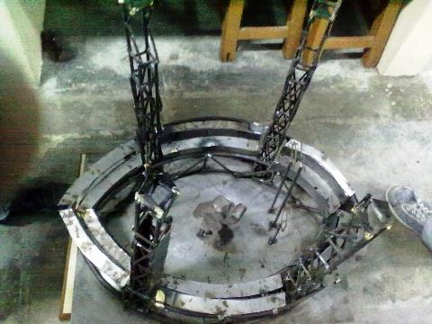

Objective is to build an autonomous navigation vehicle which can reach any defined coordinate while detecting and avoiding obstacles incorporating a GPS module, 3D laser-scanner, magnetometer, Xbees,Optical flow Sensor and an Inertial Measurement Unit (IMU), using a PandaBoard along with Implementation of mechanical design for traversing on rugged terrains, clearing obstacles with the help of a frog-like jump.
Under
Dr. Kantesh Balani
, Department of Mechanical Engineering, IIT Kanpur (May 2012-July 2012)
| Material Image Processing
Developed a computer program for extraction of various characteristics features from microstructures like grain or particle size, volume fraction, agglomerated regions etc. based on image analysis.This code can be utilized for quantification of the distribution of phases in the binary or ternary phase material image, which remains a major challenge for correlating mechanical properties of composites.
Under
Dr. Veena Bansal
, Department of Industrial and Management Engineering, IIT Kanpur (May 2012-July 2012)
| Management
Developed an E-Commerce business model for providing an online menu and food delivery for restaurants available in city.Prepared detailed reports on web-development, security systems, payment options, revenue model and cost benefit analysis, supply chain, marketing, pricing and personalization.
Basic aim of the project was to develop a machine which recognizes all the character strings which came across its path.Developed a code which can extract a character string from an image using image processing in OpenCV.
Building of robots which would autonomously play soccer.Implementing and analyzing multi-robot task allocation and cooperative learning strategies.Image processing and tracking with implementation of Kalman filter to remove the noise.
Made to participate in the event Ocean Fourteen event at Techkriti’12.Made Autonomous Robot based on Image Processing capable of traversing arena and clearing the obstacles like moving robot, climbing on moving platform. Image Processing was done using OpenCV through an overhead camera in HSV format by a remote operating computer which gave commands to Atmega16 MCU by UART communication.
Made to participate in the event Cricbot event at Techfest’12. Made an Autonomous Fielding Robot based on Image Processing capable of collecting red balls in collection pit.
Made to participate in the event Tic Tac Toe event at Techkriti’13. Made an Autonomous Robot based on Image Processing capable of playing 6x6 Tic Tac Toe using Min Max Algorithm.
Made to participate in the event Wild Soccer in the intra IIT Kanpur technical festival, Takneek ’11.Made wirelessly controlled robots capable of scoring goals as well as fighting with opponent robots.
Made to participate in the event Trip to Future at Techkriti’11. Made a autonomous robot capable of traverse the arena including slopes, U-turn, sharp right turn. Edge following is done by taking inputs through Infra-Red Sensors and Pulse Width Modulation was used to control the speed of the motors using a differential drive mechanism.
Under
Dr. Kallol Mondal
, Department of Material Science and Engineering, IIT Kanpur (May 2012-July 2012)
| Material Image Processing
Mechanical Project – Metal Automata ‘Butterfly Effect’:
Made a metal automata of two butterfly and one flower with upward and downward movements of the wings of butterfly and horizontal movement of flower between butterflies by using single rotatory input, with the help of Spur and Bevel Gears.Fabricated by using machining processes like shaping, milling, drilling and turning.
Metallurgical Project – Quiddich Stadium:

Made a miniature model of the Quiddich Stadium ( A fictional stadium in movie Harry Potter) including its pillars,seats, goalposts, harry potter with broom.Fabricated by using metallurgical processes like welding, brazing, sheet metal forming and casting.